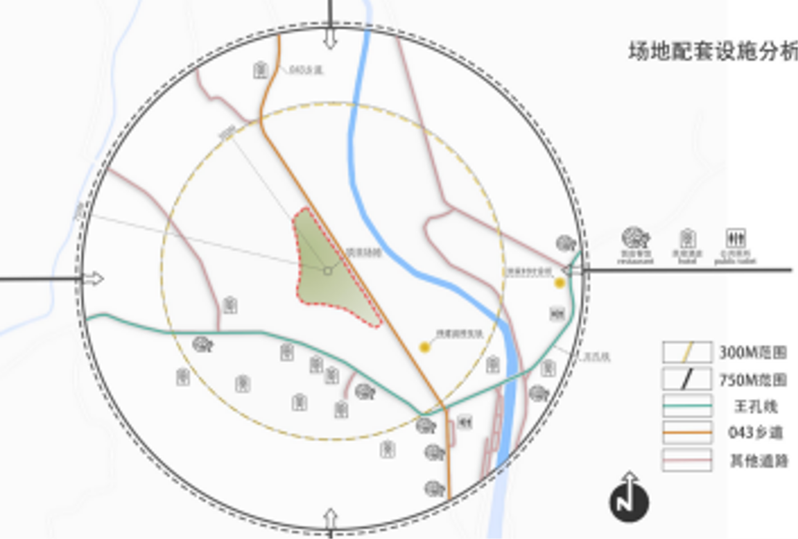
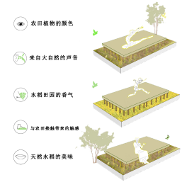

一、洪家村基本情况

洪家村位于浙江省湖州市安吉县的西南部，属报福镇管辖
在区位方面，洪家村东临镇政府所在地，通过王章公路及乡道与灵峰寺相连，南接深溪村，东南侧通过乡道与安吉县山川乡云上草原相通，西邻中张村，北连龙王湖，通过104国道连接安吉中国大云海。在景观资源方面，村庄坐落于天目山北麓和西苕溪上游的黄浦江源精品观光带中心地带，村内拥有国家级龙王山自然保护区、百亩杜鹃花基地等景区，自然风光优越。在生态农业方面，洪家村的竹林在其中扮演着重要的角色。在适宜气候和肥沃土壤的作用下，当地的竹子质地坚韧，色泽鲜亮，经过精细的工艺，用其制成的竹制品美观、耐用，不仅满足了本地市场的需求，还远销国内外，深受消费者的喜欢。
洪家村在报福镇中占据着示范和引领的核心地位，以其显著的生态农业，尤其是其竹经济为经济支柱，同时在生态保护、旅游发展和环境整治等方面均取得了突出成就。该村不仅成功打造了多个旅游休闲项目，例如深溪峡谷悬崖漂流、小野衫屿露营基地、棋盘石度假村、杜鹃花基地、地质公园小镇等，成为吸引游客的热点，还在推动乡村振兴和农业创新方面发挥了重要作用，为镇域内的可持续发展树立了标杆。
二、交通区位分析
区位交通分析示意图
洪家村依托长三角经济圈的区位优势，通过县域内的04省道、11省道及杭长高速公路，与申苏浙皖高速、沪宁杭高速、104省道、318国道等重要交通干线相连，实现快速通达周边主要城市的目标，如安吉县城位于其30分钟交通等时圈内，周围德清县、长兴县等县区及湖州市区、杭州等位于其45分钟等时圈内，上海、南京等位于其2.5小时等时圈内。
其周围高铁站分布众多，如杭州西站、德清西站、安吉站等站点均位于其50km交通等距圈内，而杭州站、杭州东站、德清站等站点位于其100km等距圈内，与各大站点联系紧密，高铁出行方便。
三、生态环境情况
洪家村拥有得天独厚的自然环境。洪家村位于国家级龙王山自然保护区进出口处，深溪河流域穿村而过，平均海拔高度在150-600米之间，年均气温15℃，年均降水量达到1500毫米，气候温和湿润，具有典型的水畔田园风貌，生态环境宜居，置身其中仿佛投入大自然的怀抱，能切身感受到最原始纯粹的自然之意。
此外，洪家村拥有山林面积达到11600亩，占全村土地的比例约为66.14%，其中包括2518亩的毛竹林和1320亩的小竹林，不仅为村庄提供了丰富的竹林资源，更是当地生态环境不可或缺的重要组成部分，为这个处于山地里的村庄构筑起生态的绿意屏障。洪家村的自然环境优美宜人。村域内自然景观资源丰富，拥有依托龙王山的“植物王国”，蕴含着丰富的动植物种类和资源，包括多种国家二、三类稀有珍贵树种、以及梅花鹿、娃娃鱼等稀有动物。村庄内还拥有千亩杜鹃花基地，每年4月中旬至5月上旬的花季，野生杜鹃花盛开会形成一片艳丽的花海，漫山遍野的火燃遍整个山间，景色十分壮观。
洪家村在生态保护和绿色发展方面也十分重视。近年来，洪家村一直积极响应美丽乡村建设，积极推进生态文明建设，实施垃圾分类、污水处理和河道清理等环保措施，村内干净度和整洁度显著提高，河面光滑如镜，干净无杂质漂浮，显著提高了人居环境质量，获得了中国精品美丽示范村、低碳生态住区、健康绿色休闲第一村等称号。
洪家村的生态环境为其可持续发展提供了坚实的基础，在保护环境的同时，积极探索绿色发展之路，努力实现人与自然和谐共生，为建设美丽乡村和推动乡村振兴战略的实施做出了积极贡献。
四、村内基础设施与资源利用情况
1.村庄路网概况
洪家村距离县城28公里，主要依靠王章公路进出，交通便利。村庄内部的交通规划也体现了其对村庄交通发展的重视。洪家村对现有道路进行整合并优化，构建舒适的村庄休闲慢行系统。
村庄的对外道路包括王章公路和通往深溪村的道路，其中王章公路宽度为10米，通往深溪的道路宽度为7米。村内路网主要由两条主路构成，呈树枝状向四周延伸，村内主路网宽度为6米，连接各自然村和服务点。慢行系统宽度在3米至5米之间，各级道路较为平整，基本已完成硬化，但道路两旁绿化配置率较低，无降噪净化功能。
洪家村整体交通网络布局较为合理，既满足了村民的日常出行需求，也有效串联华贝生态农业项目、金乐度假酒店及悬崖漂流等项目，为旅游和生态农业提供便利。
洪家村村内路网图
2、项目和资源整合概况
依托优越的自然资源和环境，洪家村大力发展生态休闲农业和旅游业。
在休闲农业方面，其一，为生态休闲农业园的设立。该农业园位于龙王山景区，处于王章公路风景带上，拥有广阔的面积和丰富的农业种植区。农业园内包括了立体种植园、百果园、生态养殖基地和绿色蔬菜基地等子园区，为游客提供了休闲采摘和观光采摘等体验项目；此外，该园区还设有农家乐服务区和田园休闲区。
农业园实景图
其二，南希南作为青年返乡创办的知名企业，在当地打造了占地约6亩的沉浸式农创综合体验基地，以及占地300多亩的家庭农场，除了品尝地道的农产品，也为游客提供制作伴手礼，学习制作传统的手工糕点和手工面，并进行农创研学之旅的体验机会。
南希南基地入口实景图
其三，引进华贝生态农业项目，该项目计划流转土地400余亩，为游客提供农业观光和特色果蔬种植的特色体验，另新建民宿、酒店等设施，旨在打造田园综合体。
蔬菜基地实景图
在休闲旅游业方面，洪家村以丰富的生态旅游资源为依托。通过招商引资，洪家村引进了多种旅游体验项目，包括位于洪家村村口的水上运动项目——深溪峡谷悬崖漂流。村内有分松林、草坪、木平台三区的小野衫屿露营基地，有为游客提供采茶体验的山野型“四星级酒店”金乐雷迪森怿曼度假酒店，有旅游、度假、休闲、观光、探险、户外运动等多功能于一体的，提供高品质的休闲旅游体验的棋盘石度假村。村内还打造了杜鹃花基地、地质公园小镇等文旅景点，形成了春赏花、夏秋漂流的文旅格局。
悬崖漂流处实景图
金乐雷迪森酒店远景图
杜鹃花田实景图
农作物
农田植被分析图
田地空间有超过九成的空间在用地红线内，因此农田主要是以水稻种植为主。除此之外，根据活动以及美观的需要，在静思阁的西部以及南部设置了蔬菜区域，在悦心居的周围有依照梯度的不同设置了金色花果区域。
农田内的大部分区域种植水稻，水稻种类选取双季稻。该农田内土壤较疏松，且附近有水流通过，十分适宜大面积种植水稻。对于水稻品种的选择，双季稻可以让地块在季节间颜色多次变化，同时也可以在一年内收获两次，在增加洪家村村民的收入的同时，也形成了一片靓丽的疗愈环境积淀之处。
在静思阁的周围会开设农田认领以及蔬菜采摘活动，在该区域内，自西向东分别种植了油麦菜、豌豆苗、青蒜、生菜、香菜、小白菜。多样丰富的蔬菜可以满足人们对于活动的需求，也为农田的美观尽了一份力。悦心居周围考虑到田地存在一定高度差，计划利用梯度种植的理念，分区依次往上小面积种植油菜花-向日葵-柑橘果树。在颜色上以金色系为主，造高低视觉差与颜色冲击。金色稻田、向日葵海、油菜花香与果香，尽显自然之美与农人智慧。
水渠与稻田鱼蟹
本空间将为田间水渠赋予了新的生命。原本的水渠经过拓宽和挖深，不仅优化了水质，更营造出一种溪流泉水般的清透玲珑之美。清澈的水流在阳光的照射下波光粼粼，仿佛流淌着大自然的诗意与灵动。游客可以走在水渠中，体验水渠的清凉与抓鱼的快乐。
同时将奉行稻田与鱼蟹协同养殖，采取融合业与水产养殖的生态循环模式。项目将合理布局稻田和养殖区域，实现了稻蟹共生、互利共赢的效果。其中蟹类清除田中杂草和害虫，排泄物又肥田，促进了水稻的生长而水稻为鱼蟹提供了良好的生态环境和天然饵料。通过稻田与鱼蟹养殖模式，可以实现农业与水产养殖的有机结合，促进生态平衡和经济效益的双赢。
房屋外观
房屋外观示意图
在保留原本坡屋尖顶的建筑外观的基础上，在主入口两侧设计了透光玻璃落地窗，以打造稻田间清新明快的房屋为主旨遵从田园风格，使得木材与玻璃在田野间相相融合。木纹理的质感与玻璃轻巧通透的感官，使得整个房屋的视觉中心被定格在主入口之上，使得原先砖瓦结构的房屋更具备如同“在稻田间呼吸一般”的轻盈舒适感。淡雅的原木色搭配着黄绿色稻田，让整个空间充满生机与活力，仿佛回归大自然的怀抱，让人第一眼就被乡间淳朴悠闲氛围感所抚慰，给予心灵上的慰藉。
房屋装饰
房屋装饰效果图
房屋外观采用了传统中式的装饰风格。墙面上镶嵌着精美的竹制中式花窗，透过花窗洒下的光影，宛如一幅幅流动的水墨画。而在房间外则设计了一串串清脆的竹铃。每当微风拂过，竹铃便发出悦耳的声音，宛如山间的清风与溪水交织出的自然乐章，让人身处其中怡然自得。整体装饰简洁而不失雅致，中式花窗与竹铃的点缀，为这间房屋增添了一抹独特的田园风味，让人仿佛置身于一个静谧而富有诗意的世界，为后续开展的各项疗愈项目奠定了东方宁静致远的空间环境。
房屋室内疗愈空间
室内效果图
房屋室内布局是由中式古风古韵元素而展开的。房屋分别起名为悦心居和静思阁。进入悦心居后，首先映入眼帘的是开敞的休憩与活动空间，摆放着舒适的休憩榻垫和茶歇座位。悦心居不仅设有舒适的会客洽谈的空间，同时也为开展室内的亲子手作活动提供了宽敞的桌面和座椅。静思阁则以接待及开展疗愈活动为主要功能，前来的顾客可以在品茶之余，伴着缕缕琴瑟与屋外虫鸣，进行静心冥想、打坐、抄写经书等各类疗愈项目。
不管是悦心居还是静思阁，凡是靠近窗户的地方都是一个温馨的接待空间，摆放着舒适的座椅和茶几。阳光透过窗户洒进室内，营造出一种温暖而舒适的氛围，适合彼此聚畅谈心事。
房屋两侧的窗被改造成了印有竹元素的可移动屏风门。阳光透过屏风洒下缕缕金光，形成了良好的室内光影效果。屏风可以让人们从室内移步到室外，推门则可进入改良过的木台。人们可以坐在在木台上休憩饮茶、舒展冥想，与房屋外金灿灿的稻田进行之间的观赏与互动，之中再无阻隔或屏障。这不仅做到了真正的“推门有景”，还拉近了房屋与田地之间的距离，拉近了人与大自然的互动与沟通。两个房屋的室内空间布局合理，功能齐全，既有疗愈身心的宁静空间，温馨舒适的接待空间，使人在这里感受到自然生态感和独属于乡间的闲暇安宁。
房屋材质
材质分析图
房屋保持了原有的砖结构土坯房结构，在此基础上加入了原木、竹编、玻璃以及大理石等材质。
房屋采用了大量的原木作为建筑外部墙面的主要装饰和外围走廊的主要材料，给人以柔和自然的感觉；原木元素表达了在城市水泥森林中、快节奏生活下的人们对大自然的向往和热爱，简单治愈的原木元素犹如一缕清风，扫除一天的疲劳，感受大自然对心灵的安抚。同时，建筑以玻璃作为主入口的主要材料，其具有独特的透明性和轻盈感，不仅能够为室内提供充足的自然光线，还能与周围环境和谐融合，创造出美感与舒适感相结合、自然与现代材料相结合的独特效果。除此之外，房屋因地制宜地加入了当地特色的竹编元素，增加建筑的美观性和特色性。多种材料的使用，以营造多样化的空间氛围，带来各种形式的美感，以自然材料为主，给人以质朴、宁静的感觉，木质的温暖色调和质感，使建筑呈现出独特的自然美观。
房屋周边景观
周边景观示意图
房屋周围的小面积空地被精心布置成了一处四季更迭、色彩斑斓的秘境。樟树以其四季常青的姿态挺立，为这片土地带来一抹沉稳与坚韧的绿色。春日里，樱花树竞相绽放，粉嫩的花瓣随风轻舞。夏日，向日葵成了这片小空地的主角，金黄色的花朵在阳光下闪耀着耀眼的光芒，传递着无限的生机与希望。同时与油菜金黄色的花海遥相呼应，将整个空间染成了金色的海洋，让人感受到夏日的热烈。秋风起，鸢尾花悄然绽放，以优雅的姿态和丰富的色彩装点着这片土地，为凉爽的秋季增添了一抹温馨与雅致。这些景观植物的巧妙搭配，不仅丰富了视觉体验，更使得房屋周边的环境层次分明，更好地创造了一个助人放松、减压和恢复心灵健康的自然景观环境。
田野效果意象
稻田屋舍效果图
金色的阳光透过稀疏的云层，洒在波光粼粼的稻田上，与其中的屋舍交织成一幅温馨和谐的景象。稻穗随风轻摆，发出沙沙的响声，如同低语，讲述着丰收的喜悦与岁月的静好。站在这片稻田边，望着这栋房屋，心灵仿佛得到了前所未有的洗涤与安宁，让人忘却尘世的烦恼，只想沉浸在这份宁静与美好之中，让时间缓缓流淌，享受这份难得的田园诗意。
田间栈道
田间栈道效果示意图
田间的木质栈道的设置依照等高线的排布，增加了田间的活动空间，整体呈现出环绕静思阁与悦心居的分布状态，串联起了各个活动区域和场所。栈道主要是由棕色木纹的木板构成，与整体的黄色稻田相辅相成，是休息与深度体验的地点。
栈道联通了悦心居与静思阁，游客不用再通过车行通道以到达另外一个活动场所，这也减少了因为田间没有人行道导致的对农田的踩踏，是对生态的一种保护。
当游客走在田间栈道上时，他们会被稻田包裹，风吹来，可以闻到稻田的香味，或者通过触碰与抚摸，与大自然有一个深度的交流。同时，木质栈道延伸到稻田里的平台也为游客提供了在稻田中休息与放松的空间。
田间冥想台与观景台

田间的冥想台叫“听雨”，是由木质材质构成，外面涂上了防水的涂料，是对静思阁疗愈区的拓展。在平时，游客可以选择在稻田里进行冥想，倾听稻田的声音，和大自然来一次心与心的会面；在下雨天，游客们也可以选择在此进行冥想，雨声、风声、虫鸣、鸟叫，微微细雨中的冥想台会帮助体验者平复心情、进行一次对自我的深度探寻。
田间另外设有观景座，主要设置在静思阁附近的地势较高处。当游客在观景座上时，可以看到整体农田里的各类蔬菜、听到水渠的声音、闻到水稻的香味，是一次身心的深度放松。
田间隔音廊道
农田内设置有多个收音器，分布于水稻的种植区、水渠内部，可以捕捉水稻摇摆、水流流动、风声、虫鸣、鸟叫等自然声音。自然的声音是一剂良药，可以缓解快节奏城市生活给人们带来的疲惫，帮助游客在这稻田和小屋之中重新探寻自己的人生方向。
考虑到该区域周围有一条车行道，自然声音的采集会受到影响，为了将大自然最原始的声音传递给游客，在农田靠近车行道的部分设置了田间的隔音廊道。该隔音廊道主要由樟树与低矮的灌木构成，它们可以在一定程度上减少汽车通过带来的噪音。再者，为了保障大自然的声音，整体会减少在车行道附近的收音设施的放置数量，且增加收音设施的降噪功能。
以“五感设计法”为核心，打造一个以“五感疗愈”为主，疗愈活动为辅的疗愈基地。
基地内设置了嗅觉项目：点燃植物香薰加强疗愈环境、制作茶渣香皂；视觉项目：制作疗愈植物瓶、开展曼陀罗绘画；味觉项目：品尝各种草药茶或者治愈饮品；听觉项目：体验自然音疗或乐器音疗；触觉项目：进行稻田瑜伽、完成大地曼陀罗项目。
另开设特定疗愈项目——心灵漫步、正念观息、纤维艺术等待大家体验！
吉祥物示意图